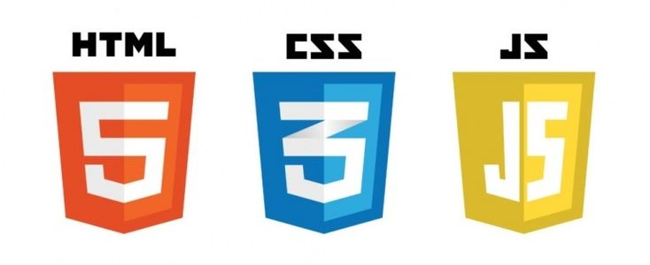

MANUAL DE USUARIO
Que es un manual de usuario?
Manual de Usuario:es un documento de guía técnica o instructiva que explica de forma clara y sencilla cómo funciona un producto, software, sistema o dispositivo, orientando al usuario paso a paso en su instalación, uso correcto y solución de problemas básicos.
Funciona como un puente entre los desarrolladores y los usuarios finales, traduciendo el funcionamiento técnico en explicaciones sencillas y paso a paso.
A diferencia de los documentos técnicos internos (como el código fuente o los esquemas de arquitectura), el manual de usuario está redactado con un enfoque centrado en el usuario, utilizando un lenguaje claro, accesible y estructurado para acortar la curva de aprendizaje y garantizar una experiencia segura y eficiente.
De que trata el proyecto?

Un Proyecto Sociotecnológico (PST) centrado en el desarrollo de un sitio web para la U.E.N. Luis Augusto Machado Cisneros es un trabajo de investigación y aplicación práctica. Su propósito principal es resolver una necesidad real de comunicación, divulgación o gestión de información en la comunidad educativa mediante el uso de la tecnología.
Con esta herramienta tecnológica, la institución da un paso hacia la transformación digital, garantizando la transparencia informativa, reduciendo la brecha de comunicación entre el hogar y la escuela, y dotando a la U.E.N. "Luis Augusto Machado Cisneros" de una plataforma moderna y centralizada que resalta su compromiso con la excelencia educativa.
Estructura de una pagina web.

HTML (HyperText Markup Language): Es el lenguaje de marcado encargado de la estructura y el contenido de la web. Utiliza etiquetas (como títulos, párrafos, imágenes y enlaces) para organizar la información de forma jerárquica.
CSS (Cascading Style Sheets): Es el lenguaje de diseño y estilos que define el aspecto visual de la página. Se encarga de los colores, las fuentes, los márgenes y de adaptar el diseño a diferentes tamaños de pantalla (diseño responsivo).
JavaScript: Es el lenguaje de programación que aporta la interactividad y la lógica dinámica. Permite que la página reaccione a las acciones del usuario (como clics, animaciones, validación de formularios o actualización de datos en tiempo real sin recargar la web).
Como se mantiene una pagina?
Mantener una página web implica un conjunto de tareas continuas para garantizar que el sitio funcione de forma segura, rápida, actualizada y accesible para los usuarios. No se trata solo de subirla a internet y olvidarse, sino de darle el mantenimiento técnico y de contenido necesario.
Este proceso necesita dsocosas
Hosting:El funcionamiento de un hosting se basa en el almacenamiento y la entrega de datos a través de una arquitectura cliente-servidor. En términos sencillos, actúa como el hogar digital de tu sitio web, manteniéndolo conectado a Internet de forma permanente.
Dominio:El dominio web es la dirección única e irrepetible que los usuarios escriben en el navegador para acceder a un sitio web. Su función principal es traducir las complejas direcciones IP numéricas de los servidores en nombres de texto fáciles de recordar para los seres humanos.